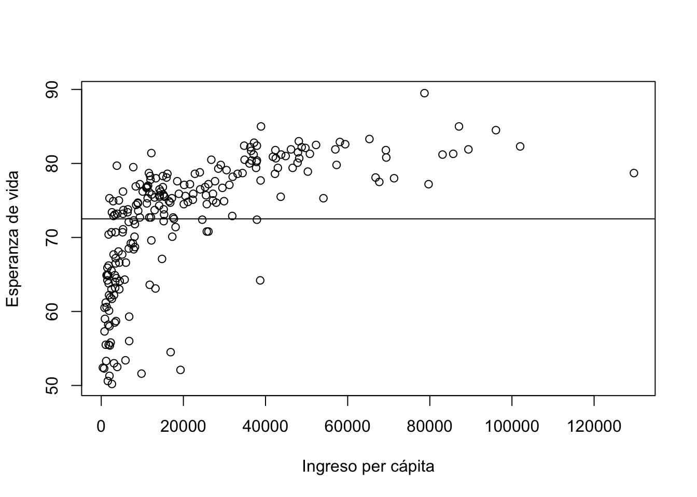

Capítulo 2 El modelo de regresión simple
Nota que la fórmula para \(y_i\) que hemos aprendido (ecuación (1.1) de la sección anterior) tiene dos componentes: 1) parte no aleatoria y 2) parte aleatoria.
La parte no aleatoria puede definirse como:
\[\begin{equation} \mathbb{E}(y_i | x_i) = \beta_1 + \beta_2 x_i. \end{equation}\]La fórmula anterior implica que, si conociéramos los valores de \(\beta_1\) y \(\beta_2\), la línea que estamos buscando partiría de \(\beta_1\) y tendría pendiente \(\beta_2\).
Por otra parte, el componente aleatorio es \(u_i\). En otras palabras, \(u_i\) es un componente desconocido que no nos permite calcular con certeza los valores de \(y_i\) a partir de la ecuación (1.1).
Pero, ¿porqué existe este \(u_i\)?
La inclusión de \(u_i\) en el modelo se justifica por las siguientes razones:
- La posible omisión de variables explicativas.
- Una posible agregación incorrecta de variables.
- Una posible especificación incorrecta del modelo.
- La posible elección de una forma funcional incorrecta.
- Por posibles errores de medición.
Lo anterior implica que, dado que no es posible encontrar la línea verdadera delimitada por \(\mathbb{E}(y_i)\), esta tiene que ser aproximada. Esta aproximación resulta en la siguiente ecuación estimada:
\[\begin{equation} \widehat{y}_i= b_1 + b_2 x_i. \end{equation}\]Aunque esta línea podría bien trazarse a ojo de buen cubero, existen algunas técnicas formales, todas ellas involurando al residual de estimación. Este está definido como:
\[\begin{align} e_i &= y_i - \widehat{y}_i \\ &= y_i - b_1 - b_2 x_i \tag{2.1} \end{align}\]Naturalmente, el objetivo es encontrar \(b_1\) y \(b_2\) tal que los valores de \(e_i\) sean los más bajos posibles.
2.1 Minimización de \(\sum_{i=1}^{N}e_i\)
Como primera opción para estimar los coeficientes de la ecuación (2.1), podríamos intentar resolver el siguiente problema:
\[\begin{align} \min_{b_1,b_2}\sum_{i=1}^{N}e_i &= \min_{b_1,b_2}\sum_{i=1}^{N}(y_i - \widehat{y}_i)\\ &= \min_{b_1,b_2}\sum_{i=1}^{N}(y_i - y_i - b_1 - b_2 x_i). \end{align}\]Sin embargo, notemos que si fijamos:
\[\begin{align} b_1 &= \overline{y}=\frac{1}{N} \sum_{i=1}^{N} y_i\\ b_2 &= 0, \end{align}\]obtenemos que:
\[\begin{equation} \sum_{i=1}^{N}e_i = 0, \end{equation}\] es decir, la suma de los residuales es cero (su valor mínimo) y: \[\begin{equation} \widehat{y}_i = \overline{y}. \end{equation}\]El resultado anterior implica que siempre podríamos obtener una línea horizontal sobre \(\overline{y}\). Esto, naturalmente, no parece ser una buena aproximación, sean cuales sean los datos analizados. Para nuestro ejemplo de la esperanza de vida, esta aproximación resultaría en la siguiente línea de estimación y coeficientes:
data_full<-read.csv(file.path("/Users","alejandro.mosino","Documents","github","econometria--R_book","_data_econometria","lif_exp.csv"), header=TRUE, sep=",")
b1 <- mean(data_full$life_exp)
b2 <- 0
with(data_full,plot(rgdp,life_exp,xlab="Ingreso per cápita", ylab="Esperanza de vida"))
abline(a=b1, b=b2)
print(paste0("El valor estimado b1 es: ", b1))## [1] "El valor estimado b1 es: 72.5152466367713"print(paste0("El valor estimado b2 es: ", b2))## [1] "El valor estimado b2 es: 0"Compara este resultado con el presentado en la sección anterior. ¿Cuál te parece mejor?
2.2 El método de los mínimos cuadrados ordinarios: introducción
El resultado de la sección anterior puede mejorarse si, en lugar de minimizar la suma de los residuales, minimizamos la suma del cuadrado de los residuales (RSS por sus siglas en inglés). Este problema se conoce como el método de los mínimos cuadrados ordinarios (MCO u OLS por sus siglas en inglés), y requiere encontrar los estimadores \(b_1\) y \(b_2\) tales que:
\[\begin{align} b_1 , b_2 &= \underset{b_1,b_2}{\arg\min}\left\{RSS\right\} \\ RSS&= \sum_{i=1}^N e_i^2. \end{align}\]Para ver el funcionamiento de este método, consideremos el siguiente ejemplo:
x<-c(1,2)
y<-c(3,5)
yhat<-c("$b_1+b_2$", "$b_1+2b_2$")
e<-c("3-$b_1-b_2$", "$5- b_1-2b_2$")
lab<-c("$x_i$", "$y_i$", "$yhat_i$", "$e_i$")
data_full<-data.frame(x,y,yhat,e)
names(data_full)<-lab
knitr::kable(
data_full[,1:2], caption = 'Ejemplo: Mínimos cuadrados ordinarios. Dos observaciones.',
booktabs = TRUE
)| \(x_i\) | \(y_i\) |
|---|---|
| 1 | 3 |
| 2 | 5 |
Para encontrar los estimadores del método de los MCO, seguimos los siguientes pasos:
- Primero, calculamos \(e_i\). Recordemos que este está definido como \(e_i=y_i-\widehat{y}_i\). Los cálculos se muestran en la siguiente tabla:
knitr::kable(
data_full, caption = 'Ejemplo: Mínimos cuadrados ordinarios. Cálculo del residual.',
booktabs = TRUE
)| \(x_i\) | \(y_i\) | \(yhat_i\) | \(e_i\) |
|---|---|---|---|
| 1 | 3 | \(b_1+b_2\) | 3-\(b_1-b_2\) |
| 2 | 5 | \(b_1+2b_2\) | \(5- b_1-2b_2\) |
- Ahora podemos calcular el RSS. Este es:
- Minimizamos el \(RSS\) con respecto a \(b_1\) y \(b_2\). Las condiciones de primer orden resultan en el siguiente sistema de dos ecuaciones con dos incógnitas:
- Ahora Resolvemos el sistema. Resulta muy fácil encontrar que:
- Finalmente, estamos listos para trazar la línea estimada. Esta se ve como en la siguiente figura:
with(data_full,plot(x,y, xlab="x", ylab="y"))
with(data_full,abline(lm(y ~ x)))Figura 2.1: Solución por MCO. Datos ficticios
Ejercicio
¿Cómo cambiaría el resultado anterior si agregamos un tercer punto con coordenadas \((x_3,y_3)=(3,6)\)?